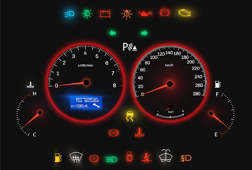

This is my report and presentation page for HCI class
Example Images of Car Dashboards:

Pros:
- large focus on speedometer and tachometer in all examples
- Distinctive scaling between the two
- logical placement of turn signals
Cons:
- inconsistent/random placement of warning icons
- 4-5 have confusing dials between speedometer and tachometer
- 3-5 have unclear fuel and temperature gauges.
Common Features:
- Speedometer
- Tachometer
- Gas gauge with direction indicator
- Temperature gauge
- Turn signal blinkers
- Gas mileage
- Odometer
- Oil pressure
- Cruise control
- Transmission state
- Various warning lights
- Not including necessary warning lights
- Poorly placed lights
- Confusing dials
- Too many unnecessary gauges
Design Suggestions:
- Numeric speedometer in addition to dial
- Very apparent distinction between speedometer and tachometer
- Turn on and off, when turn on, all warning lights turn on as a test